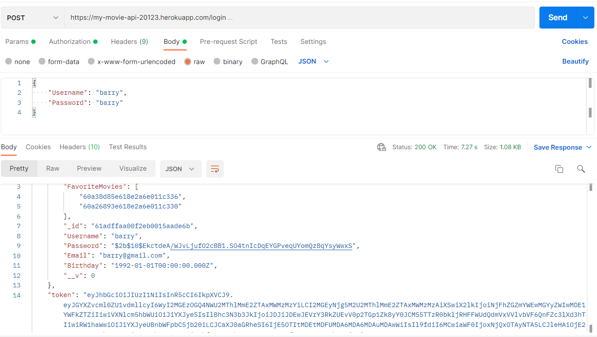
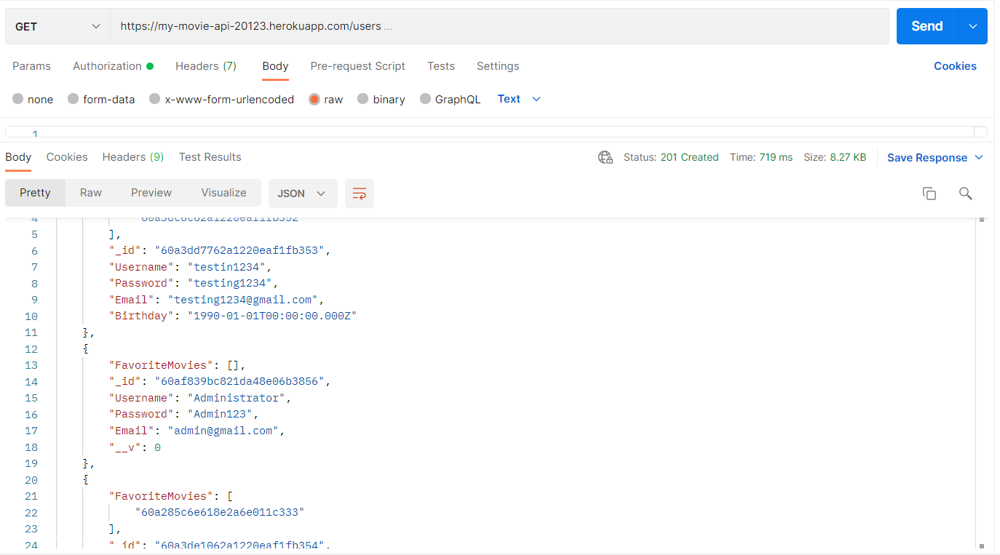
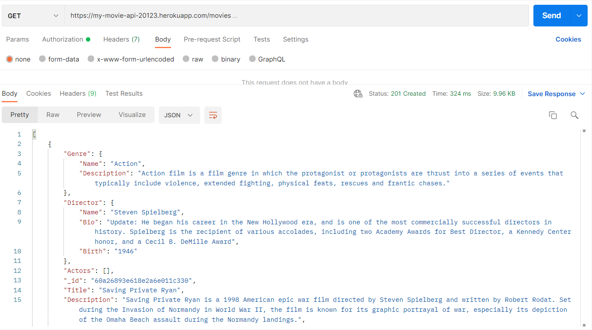
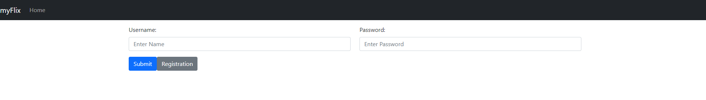
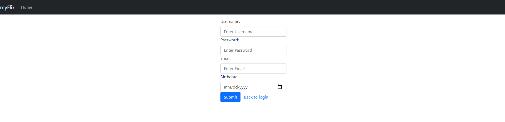
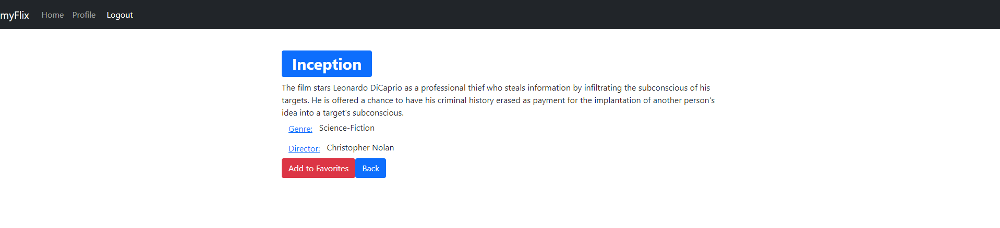
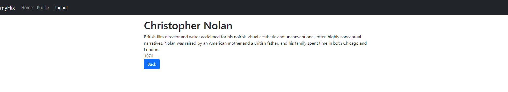
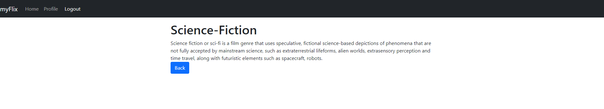
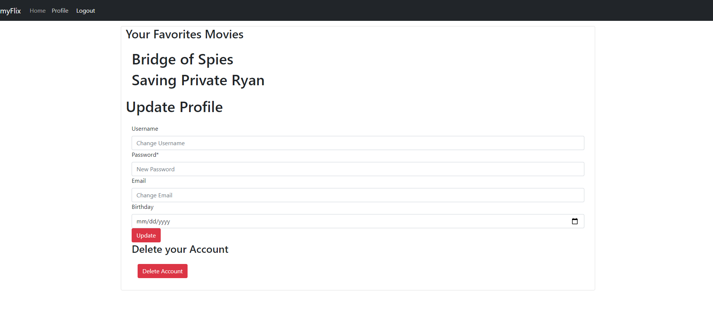

Overview: The purpose of this project was to give users access to information about movies (including genre and director). The user should be able to signup/login and then be displayed the movie list. From that they can add movies to their favorites and view/edit/delete their profile.
Purpose: This was a project I created as part of my Full-Stack course with CareerFoundry.
Objective: The objective of this project was to create and understand backend/server-side as well as creating a client side that can connect to the server-side.
Project scale: Probably a 5-6-month project but took closer to 9 months to finish. This was 2 separate projects in my course, but I combined them here since they rely on each other.
For the server-side I created a RESTful API. This was done with a nonrelational database (mongoDB), Express, and Node.js. Here is where you use common HTTP methods such as GET, PUT, and DELETE. This is where all the information is stored from user info to movie info. The API provides info in JSON format. Postman was my friend at this point in the project. I used postman to check my endpoints and make sure that everything worked properly. After implementing this I added JWT authentication which made it where the user had to have a token to log in. This is used to help secure user information.
  This step was started after finishing the API. I built an interface that would allow users to create a login and profile so they could retrieve the movie list. This was developed with React and React Redux. Include in the project was a login view, main view, movie view, and profile view. The login view allowed user to login or signup if they were a new user. The main view showed a list of all movies. The movie view should a single movie when the user clicked on a movie. Lastly, the profile view showed the users profile where they could access favorite movies, update their profile, and delete account.
     This project was by far my biggest challenge throughout my Full-Stack course. It took a lot more time than I expected to spend on it. This was mainly due to React. It was my first time using React and it proved to be difficult but with help from my mentor and tutor I got through it and learned a lot in the process. I also ran into some problems when creating the server-side. The problems with server-side were mainly due to all my data being erased from mongoDB (my mentor and tutor still aren’t sure how this happened). To deal with these challenges I took a few different steps. To start with I booked calls with mentor to talk through the problems I was facing. Also, I completed a few small react YouTube tutorials to help myself better understand react. Lastly, I searched specific coding problems or issue I had on Stack Overflow.
Overall, this was a very difficult but rewarding task. I faced many challenges and an extended timeline, but this will greatly prepare me for using React in the future. Facing challenges are sometimes the best way to learn and progress and I certainly feel like I did that with this project. Reflecting on the project now I think it could use some more styling to really show off all my skills. Otherwise, it runs very well, and everything functions as expected.